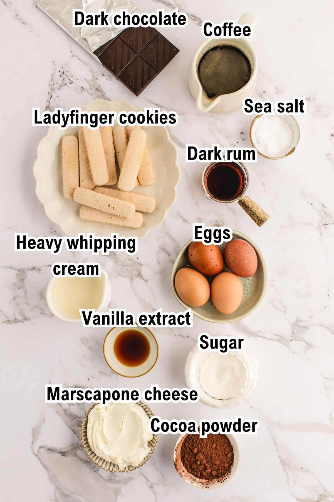

Welcome to The Art of Tiramisu
What is Tiramisu?
Tiramisu is a beloved Italian dessert that translates to "pick me up" or "cheer me up" in Italian. This elegant layered dessert combines coffee-soaked ladyfingers with a rich mixture of eggs, sugar, mascarpone cheese, and cocoa powder. Originating from the Veneto region of Italy, tiramisu has become one of the world's most famous desserts, celebrated for its perfect balance of bitter coffee, sweet cream, and delicate cocoa.
Key Ingredients
Authentic tiramisu requires high-quality ingredients to achieve its signature taste and texture.
- Mascarpone Cheese: Creamy Italian cheese that forms the base.
- Ladyfingers (Savoiardi): Light, finger-shaped sponge biscuits.
- Espresso Coffee: Strong coffee for soaking the ladyfingers.
- Cocoa Powder: Dusting on top for bitterness and presentation.
- Prepare strong espresso coffee and let it cool.
- Whip egg yolks with sugar until creamy.
- Fold in mascarpone cheese gently.
- Whip egg whites to stiff peaks and fold into mixture.

